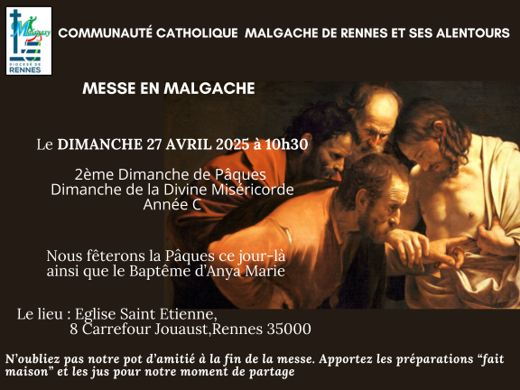

Communication
Cette commission joue un rôle clé en assurant la communication interne au sein de notre communauté et en maintenant des relations actives avec la paroisse et les autres communautés.
Sa mission est d'assurer une diffusion efficace des informations, favorisant ainsi une coopération harmonieuse et unifiée.
Médias Sociaux
Suivez-nous sur les réseaux sociaux :